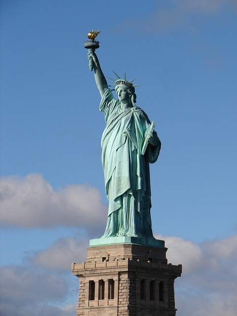

Statue of Liberty
The Statue of Liberty is a symbol of freedom and democracy. Located on Liberty Island, it's one of the most visited landmarks in the US.
Image: Statue of Liberty, Pixabay, License infoby Danny Huynh
New York City, located in New York State, USA, is one of the most iconic cities in the world. With a population of over 8 million, it’s known for its diversity, culture, and influence on global trends in fashion, finance, and entertainment. NYC offers a range of weather, from snowy winters to warm, humid summers. English is the primary language spoken here.
The Statue of Liberty is a symbol of freedom and democracy. Located on Liberty Island, it's one of the most visited landmarks in the US.
Image: Statue of Liberty, Pixabay, License infoCentral Park is an urban oasis in the heart of Manhattan, perfect for walking, biking, or relaxing among trees and lakes.
Image: Central Park, Pixabay, License infoHome to over 2 million works of art, The Met is one of the largest and most prestigious museums in the world.
Image: The Met Museum, ExperienceFirst, License infoTimes Square is the epicenter of entertainment and lights. From Broadway shows to digital billboards, it captures the vibrant spirit of the city.
Image: Times Square, Pixabay, License info